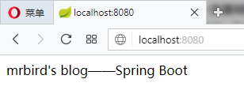

定制Banner
Spring Boot项目在启动的时候会有一个默认的启动图案：
|
|
我们可以把这个图案修改为自己想要的。在src/main/resources目录下新建banner.txt文件，然后将自己的图案黏贴进去即可。ASCII图案可通过网站http://www.network-science.de/ascii/一键生成，比如输入mrbird生成图案后复制到banner.txt，启动项目，eclipse控制台输出如下：
|
|
banner也可以关闭，在main方法中：
|
|
全局配置文件
在src/main/resources目录下，Spring Boot提供了一个名为application.properties的全局配置文件，可对一些默认配置的配置值进行修改。
自定义属性值
Spring Boot允许我们在application.properties下自定义一些属性，比如：
|
|
定义一个BlogProperties Bean，通过@Value("${属性名}")来加载配置文件中的属性值：
|
|
编写IndexController，注入该Bean：
|
|
启动项目，访问http://localhost:8080，页面显示如下：

在属性非常多的情况下，也可以定义一个和配置文件对应的Bean：
|
|
通过注解@ConfigurationProperties(prefix="mrbird.blog")指明了属性的通用前缀，通用前缀加属性名和配置文件的属性名一一对应。
除此之外还需在Spring Boot入口类加上注解@EnableConfigurationProperties({ConfigBean.class})来启用该配置：
|
|
之后便可在IndexController中注入该Bean，并使用了：
|
|
属性间的引用
在application.properties配置文件中，各个属性可以相互引用，如下：
|
|
自定义配置文件
除了可以在application.properties里配置属性，我们还可以自定义一个配置文件。在src/main/resources目录下新建一个test.properties:
|
|
定义一个对应该配置文件的Bean：
|
|
注解@PropertySource("classpath:test.properties")指明了使用哪个配置文件。要使用该配置Bean，同样也需要在入口类里使用注解@EnableConfigurationProperties({TestConfigBean.class})来启用该配置。
通过命令行设置属性值
在运行Spring Boot jar文件时，可以使用命令java -jar xxx.jar --server.port=8081来改变端口的值。这条命令等价于我们手动到application.properties中修改（如果没有这条属性的话就添加）server.port属性的值为8081。
如果不想项目的配置被命令行修改，可以在入口文件的main方法中进行如下设置：
|
|
使用xml配置
虽然Spring Boot并不推荐我们继续使用xml配置，但如果出现不得不使用xml配置的情况，Spring Boot允许我们在入口类里通过注解@ImportResource({"classpath:some-application.xml"})来引入xml配置文件。
Profile配置
Profile用来针对不同的环境下使用不同的配置文件，多环境配置文件必须以application-{profile}.properties的格式命，其中{profile}为环境标识。比如定义两个配置文件：
application-dev.properties：开发环境
1server.port=8080application-prod.properties：生产环境
1server.port=8081
至于哪个具体的配置文件会被加载，需要在application.properties文件中通过spring.profiles.active属性来设置，其值对应{profile}值。
如：spring.profiles.active=dev就会加载application-dev.properties配置文件内容。可以在运行jar文件的时候使用命令java -jar xxx.jar --spring.profiles.active={profile}切换不同的环境配置。